A personal project: a mobile fintech app that makes everyday payments quick.
Type
Personal project, not client work
Role
Designer
Scope
Mobile app, brand colours and type, light and dark mode
Year
2023
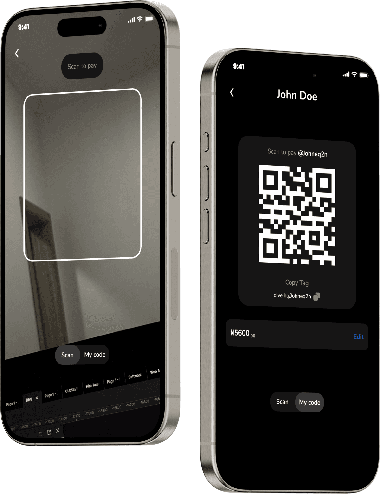
Summary
DiveHQ is a mobile payments app I designed as a personal project. Its centre is QR Pay: scan a code and the payment is done. I designed the app around that one action, then added the other things people do with money every day: sending to a bank, receiving by tag, sharing a payment link and splitting a bill.
Problem
Paying someone should take a moment, but a lot of payment flows make you stop and think: which option, which account, what do I type, is this safe. That friction makes payments feel slow, and the uncertainty makes them feel risky.
I wanted to see how much of that I could remove on a phone.
Solution
My answer was to make scanning the main action and give everything else a clear place around it. That meant three decisions:
Put the scan at the centre. It is the round blue button in the middle of the tab bar, so it is one tap away from every screen.
Keep the other ways to pay together. Send to a bank account, payment link, DiveTag and split bill all live in one Transfers list, each with a one-line description, so nobody has to guess which to use.
Keep the look quiet. A plain palette with a single blue, so the main action is always the thing that stands out.
The next sections show how each decision played out.
Brand
I kept the palette deliberately plain: white, black and greys, with one blue. Money apps need to feel calm and trustworthy, and a single accent means the blue always signals something you can act on, like the scan button and links. The typeface is Nunito. Its rounded letters keep the app friendly without looking playful about money.
#FFFFFF
#000000
#155BC6
#949494
#161616
Aa Nunito · 1234567890
Process
This is how I think through a project: understand who it is for, state the problem clearly, explore ways to solve it, then design. This was a personal project, so I did not run formal research and I am not claiming any.
01EmpathiseUnderstand user needs
02DefineClearly outline the problem
03IdeateGenerate innovative solutions
04DesignDevelop visual and interactive elements
Who it is for
I designed for two very different people: someone who wants the app to stay simple and reliable, and someone who wants payments to be quick and secure. If the app works for both, it works for most people in between. These are fictional personas, written to guide the design.
Grace Maduka
Age 74Retired
Comfortable with basic technology. Uses a smartphone for calls and occasional browsing.
Goals
SimplicityAn easy-to-use app without overwhelming features.
ReliabilityIt works without glitches.
Family connectionEasy money transfers to grandchildren.
Pain points
ComplexityOverwhelmed by complex features.
Reliability concernsWorries about technical glitches.
Timothy Jegede
Age 26Software developer
Highly tech-savvy and an early adopter of new technology.
Goals
EfficiencyQuick and effortless transactions.
SecurityRobust encryption and advanced security.
FlexibilityVersatile features like bill splitting.
Pain points
InefficiencyDislikes waiting and cumbersome payment methods.
Security concernsWorries about data security.
Wireframes
I started on paper with three screens: the home page, the transfer section and scan to pay. Sketching first let me settle where things go (the balance, beneficiaries, transaction history, the navigation bar and the scan code) before drawing anything in detail.
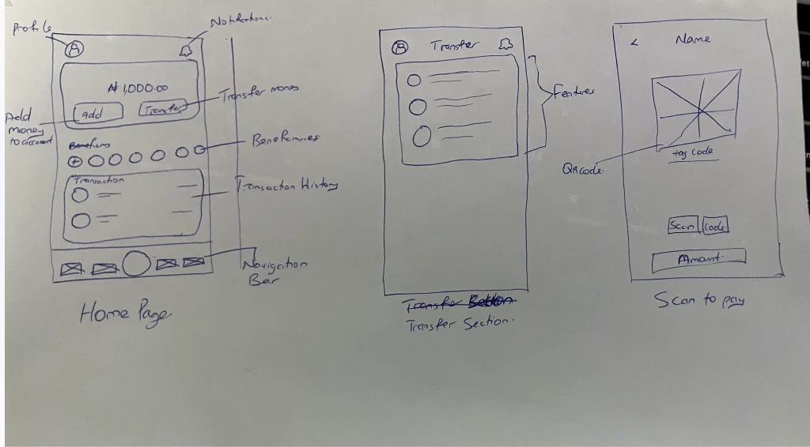
Home page, transfer section and scan to pay.
Success flow
Every way of paying starts from one place and ends at the same one. Each route has a check before the money moves, and a way to fix a mistake and carry on, so a typo or a wrong tag does not end the payment.
Features in motion
Each feature is there for a reason, and each has a short walkthrough.
Scan to pay
The core of the app. Scanning means there is nothing to type and nothing to get wrong, and the instant confirmation tells you the money has gone, so you are not left wondering.
Send to a bank account
Not everyone you pay has the app, so bank transfers had to be here. A searchable list of banks means you find yours by typing a few letters instead of scrolling a long list.
DiveTag
Account numbers are hard to read out and easy to mistype. A short personal tag is something you can say out loud or send in a message.
Payment link
Sometimes you are not standing next to the person. A link works over any chat, and it covers both sending and asking for money.
Split bill
Splitting a bill is the awkward part of going out. Doing it in the app removes the mental arithmetic, and the options cover splits that are not even.
Screens
The main flows, screen by screen. Every screen was designed in both light and dark, so use the switch to see either.
Getting in
The first minute is kept short: one welcome screen, then an email address to receive a one-time code, with a phone number as the alternative. The last step is a four-digit passcode, which opens the app and confirms transactions.
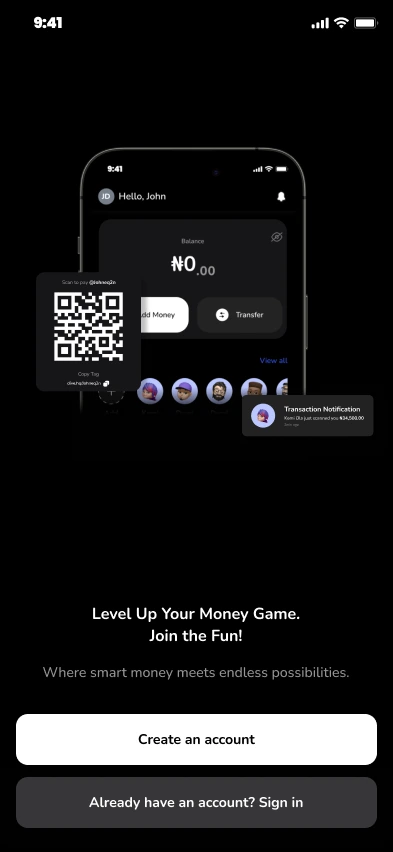
Welcome
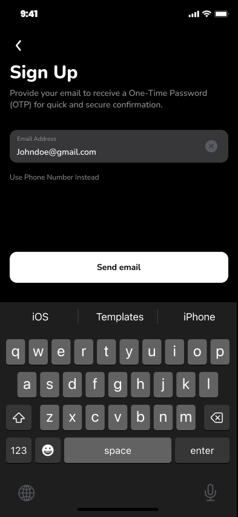
Sign up with an email or phone number
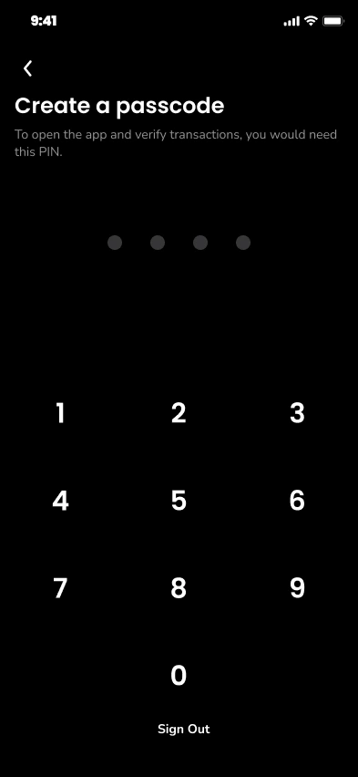
Create a passcode
Scan to pay
The amount screen is a large number pad with one line under it, "Additional fees may apply", so a fee is never a surprise. The code screen switches between Scan and My code.
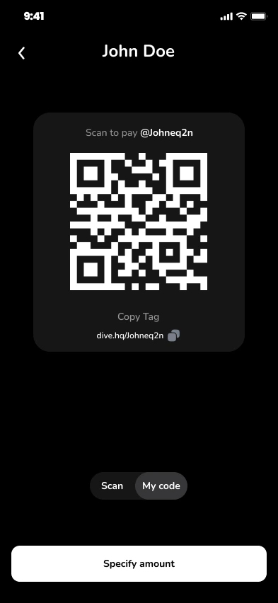
My code
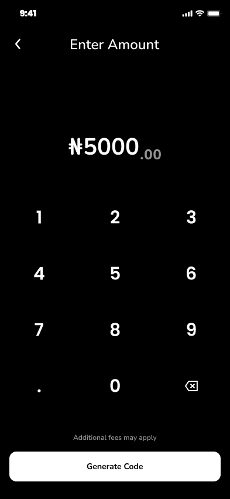
Enter amount
Send to a bank account
Saved beneficiaries sit at the top of the form, so a repeat payment is one tap. Before anything is sent, a receipt-style screen shows the amount, the fee and what the other person will receive.
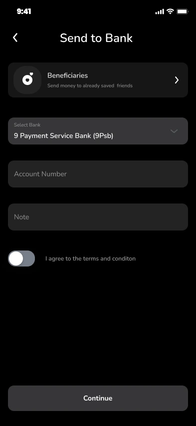
Send to Bank
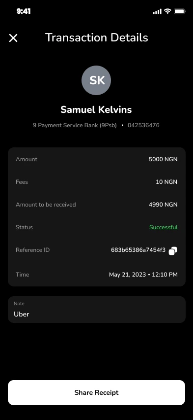
The receipt, with the reference ID
DiveTag
Searching by tag starts from an empty state that explains what to type. A tag transfer ends on the same summary screen as every other transfer, so the checking step looks familiar.
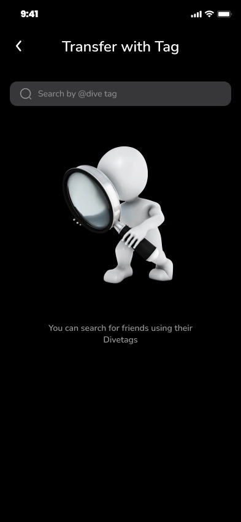
Search by tag
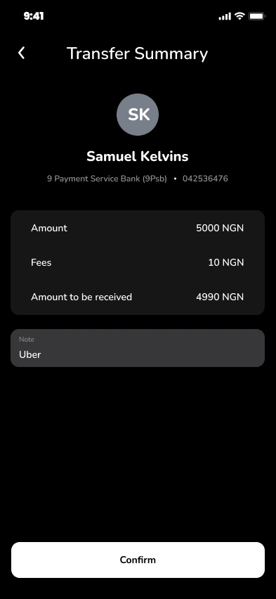
Transfer summary
Payment link
Your link is one screen away and can be shared as it is, or tied to a specific amount. A request shows its amount, its note and its status, including when the link expires.
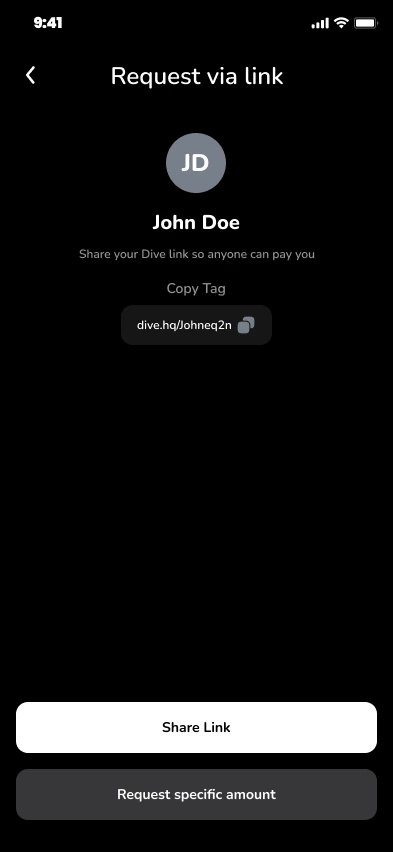
Request via link
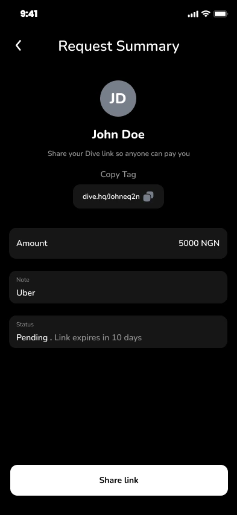
Request summary
Split bill
Pick the people, then the amounts. The default is an even split among everyone, and each person’s share is shown next to their name before you send.
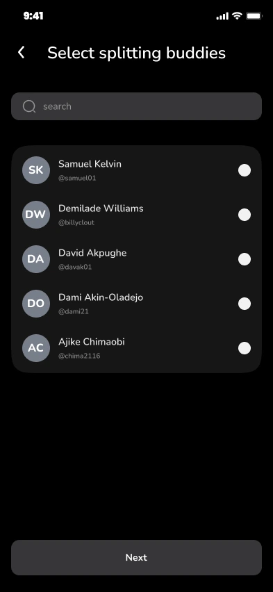
Select who to split with
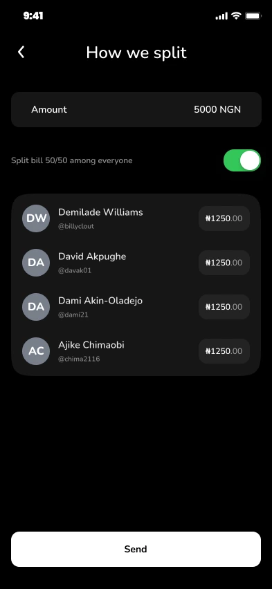
How we split
Transactions
Past payments are grouped by day, and a search field and a filter sit at the top for finding one later.
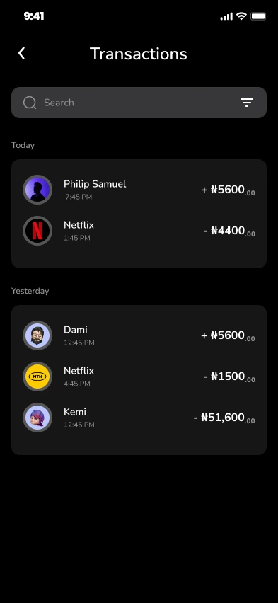
Transactions
Around the app
Transfers is where I put every way of sending money, so the choice is made once, on one screen: to a bank account, by payment link, by DiveTag or by splitting a bill. Each row says in a line what it does. The home screen and Settings are in the next section.
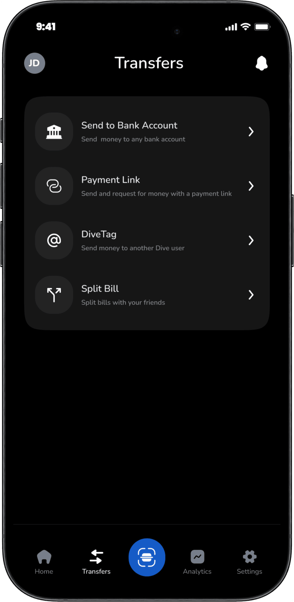
Transfers
Light and dark
People use payment apps in bright sun and in dark rooms, so I designed both modes and put the switch in Settings. The layout, the spacing and the blue accent are identical in both, so the app feels the same whichever you choose and nothing has to be relearned.
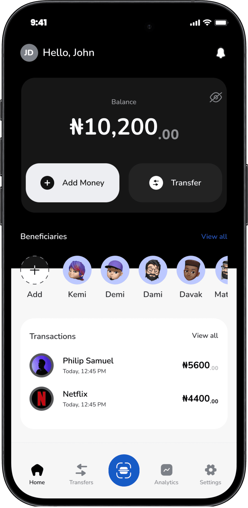
Home, dark and light
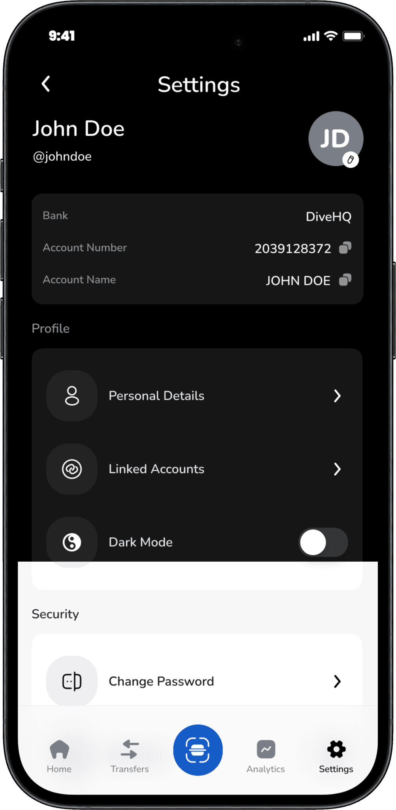
Settings, dark and light, with the switch
What I took from it
The main thing I took from DiveHQ is that in a payments app, every extra decision you ask of someone is a cost. The best choices were the ones that removed a step or a doubt: one obvious main action, one place for the other options, one accent colour. Next time I would test it with real people early, because a design that feels simple to its designer is not proof that it is.